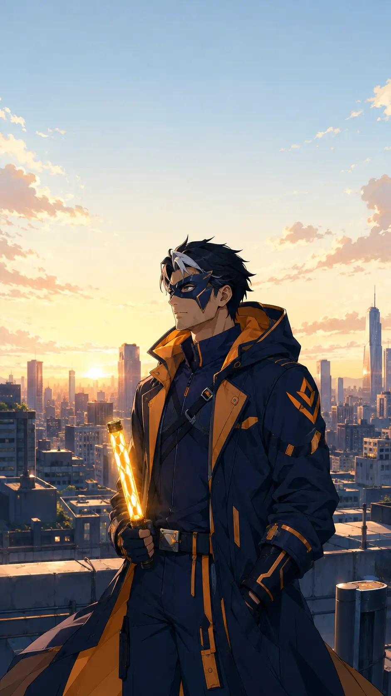

MOVIES / INDUSTRY • AUGUST 4, 2026
Tom Holland Has a Plan to Pass the Spider-Man Torch—but He Is Not Leaving Yet
Holland’s latest interview confirms a long-term succession vision, not an immediate retirement announcement. Here is what he said, why Miles Morales remains the likeliest candidate, and what is still only speculation.

The Spider-Man rumor machine has found its newest web to pull: Tom Holland says there is a plan for him to pass the baton to another Spider-hero. Predictably, the internet converted that into a much louder claim—Tom Holland is leaving.
That is not what he announced.
During a July 2026 appearance on Josh Horowitz’s Happy Sad Confused podcast, Holland discussed the future of the role during the press cycle for Spider-Man: Brand New Day. His answer revealed something meaningful: conversations about an eventual succession have been happening for years, and Holland has a clear idea of what he wants that transition to accomplish. It did not reveal a retirement date, a confirmed successor, a casting choice or an approved handoff movie.
The distinction matters. Holland was describing direction, not departure.
What Tom Holland actually said
Holland told Horowitz that “a whole plan” has been in development since the team finished Spider-Man: No Way Home. He said it is laid out, acknowledged that it will change, and described having a clear vision for passing on the baton. Most importantly, he called that transition the thing he most wants to do with the character.
Those comments confirm several points.
First, succession is not a question Holland invented on the spot. The subject has been discussed behind the scenes since at least the end of No Way Home. Second, Holland is interested in helping shape the conclusion of his version of Peter Parker rather than simply disappearing between contracts. Third, everyone involved understands that a plan made years in advance is likely to evolve.
That last part is easy to lose in a headline. “There is a plan” sounds final. “It is going to change” tells us the plan is still creative architecture, not necessarily a locked production schedule.
Holland did not say that Brand New Day is his final movie. He did not say the handoff will occur in the next film. He did not identify an actor. He did not announce that Marvel Studios and Sony Pictures have greenlit a live-action Miles Morales project. Reports that make those leaps are interpreting his goal as if it were a studio press release.
Why this is not a retirement announcement
In the same era of interviews, Holland has also said that playing Spider-Man has been one of the great joys of his life and that he would continue “for as long as they’ll have me.” That statement can comfortably coexist with a plan to pass the torch.
Passing a mantle does not have to mean killing Peter Parker, permanently retiring him or replacing Holland overnight. A mentor can share the stage with a successor. Two Spider-heroes can operate at once. Peter could move into a supporting role, leave New York, take a temporary break or simply become the experienced hero who appears when the next generation needs him.
The animated Spider-Verse films have already trained mainstream audiences to understand that multiple Spider-people can coexist without one invalidating the others. The live-action movies could use that expectation to avoid the old Hollywood habit of treating succession like a recasting emergency.
Holland’s wording actually points toward a deliberate story. He wants the transfer to mean something inside Peter Parker’s character arc. That is a healthier creative instinct than keeping him in the suit until the franchise abruptly reboots around a new face.
Miles Morales is the strongest candidate—but not a confirmed one
Miles Morales is the obvious name in the conversation because Holland has repeatedly raised it himself.
In a June 2026 interview with Hobby Consolas, Holland said he has aspirations to bring Miles into the live-action universe. He described wanting to do for a younger performer what Robert Downey Jr. did for him: provide guidance, confidence and a bridge into an enormous franchise. He also admitted that there was still substantial work required to make it happen.
That gives the potential handoff an elegant emotional structure. Tony Stark helped introduce Holland’s young Peter Parker to a wider heroic world. Peter eventually becomes the veteran capable of opening that same door for Miles. The student becomes the mentor. The character who once needed someone to tell him he belonged becomes the person who offers that belief to somebody else.
It also repairs one of the limitations of Holland’s early MCU journey. Peter was often defined through his relationship with Tony—his approval, technology and legacy. A Miles story would let Peter reinterpret that history on his own terms. He could learn which parts of Tony’s mentorship were valuable and which mistakes he refuses to repeat.
Still, “Miles is likely” is not the same as “Miles is confirmed.” Holland has also spoken broadly about Spider-Gwen, Spider-Woman and other possible successors or partners. His comments establish a preference and a creative ambition. They do not establish casting, a release date or even the exact identity of the person receiving the baton.
The idea did not begin in 2026
Holland’s concern about holding the role forever dates back publicly to at least 2021. In a widely quoted GQ profile released before No Way Home, he suggested that a Miles Morales film might be best for the franchise. He also said that if he were still playing Spider-Man after turning 30, he would have “done something wrong.”
That quote followed him for years because it sounded like a deadline. Holland is now 30, has returned for Brand New Day, and plainly does not view his presence as a creative failure. The more useful reading is that his younger self feared becoming the person who occupied the role indefinitely while shutting out new interpretations.
His later comments refine that idea. Instead of leaving because a birthday arrived, Holland now imagines a purposeful bridge. He can continue playing Peter while helping build the conditions for another hero to thrive.
That shift makes sense. At 25, “move on by 30” can feel like a clean plan. At 30, after living with the character and understanding the machinery behind the films, an actor may see more value in how he exits than in choosing an arbitrary date.
What Brand New Day changes
Brand New Day is positioned as the beginning of Peter Parker’s next chapter, not merely the fourth entry in the same high-school story. The aftermath of No Way Home left Peter alive but socially erased, without the relationships that defined his adolescence. That reset gives the filmmakers room to rebuild him as a self-reliant adult.
That matters to any future mentorship story. Peter cannot convincingly guide Miles while remaining emotionally frozen as the kid who always needs rescue from an older Avenger. He needs a life, principles and a heroic identity that belong to him.
The handoff plan may therefore be less about Holland’s next contract and more about the destination of this new chapter. Brand New Day can begin the process of turning Peter into the person capable of recognizing, training and trusting a successor. That evolution could take one film or several.
There is also a business reality. Brand New Day opened as an enormous commercial event, giving Sony and Marvel little incentive to rush Holland out. Success normally buys options: another solo film, a crossover appearance, a Miles introduction or overlapping series. It does not force the studio to select only one Spider-Man immediately.
What a strong handoff should accomplish
The worst version would treat Miles as a replacement part. Peter gives him a gadget, delivers a speech and vanishes so the logo can continue. That would reduce both characters.
A meaningful transition needs friction. Peter should struggle with responsibility from the other side. He knows how dangerous the life is, which may make him protective or controlling. Miles should have goals and values that are not merely a younger copy of Peter’s. Their bond should develop through choices, mistakes and earned trust.
The story also should not require Peter to fail so Miles can look capable. Legacy storytelling works best when the veteran’s accomplishments remain real and the successor brings strengths the veteran does not possess. Peter’s experience and Miles’s different perspective can complement each other.
Finally, the handoff needs room. If Holland truly wants to help shepherd the next actor, that mentorship should extend beyond a cameo. One movie could introduce the relationship; another could prove Miles can stand independently. Peter could then step back without the audience feeling as though the franchise swapped drivers at a red light.
The RogueVerse reality check
Here is the cleanest way to sort the story.
Confirmed: Holland says a long-term baton-passing plan has been discussed since No Way Home. He has a clear creative vision for it, expects it to change and considers it a major goal for his Peter Parker.
Strongly indicated: Holland wants Miles Morales brought into live action and is interested in mentoring the performer, echoing Robert Downey Jr.’s support for him.
Plausible but unconfirmed: Miles will be the hero who ultimately inherits the lead position from Holland’s Peter.
Not confirmed: Holland is leaving after Brand New Day; Miles has been cast; a handoff film has been greenlit; Peter will die; or Marvel and Sony have announced a timetable.
The most accurate headline is not “Tom Holland Quits Spider-Man.” It is this: Tom Holland has a long-term vision for passing the Spider-Man torch—and he wants to make the transition part of Peter Parker’s story.
That is bigger than a retirement rumor. It suggests Holland sees stewardship as part of playing the character. He inherited a beloved role, helped reshape it for a new generation and now wants the eventual transition to open a door rather than slam one shut.
For now, Tom Holland is still Spider-Man. The baton is on the map, not yet in somebody else’s hand.